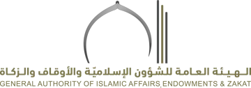
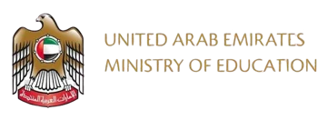
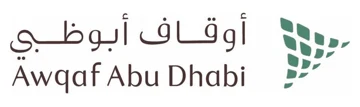

الريادة في تعزيز منظومة التعلم مدى الحياة
التسجيل مفتوح الآن في دورات اللغات — المقاعد محدودة
برامج تعليم اللغات
أربع لغات بثلاثة مستويات لكل لغة. اختر اللغة لعرض المواعيد والرسوم والتسجيل.
البرامج والدورات
تصفّح البرامج حسب المجال أو ابحث بالاسم، ثم اختر أي برنامج لعرض تفاصيله.
- اللغاتتعليم اللغة الإنجليزية للأغراض الخاصة (ESP)English for Specific Purposes (ESP)التفاصيل والتسجيل
- اللغاتتعليم اللغة الإنجليزية – المستوى (مبتدئ)English – Beginner Levelالتفاصيل والتسجيل
- اللغاتتعليم اللغة الإنجليزية – المستوى (متوسط)English – Intermediate Levelالتفاصيل والتسجيل
- اللغاتتعليم اللغة الإنجليزية – المستوى (متقدم)English – Advanced Levelالتفاصيل والتسجيل
- اللغاتتعليم اللغة الفرنسية – المستوى (مبتدئ)French – Beginner Levelالتفاصيل والتسجيل
- اللغاتتعليم اللغة الفرنسية – المستوى (متوسط)French – Intermediate Levelالتفاصيل والتسجيل
- اللغاتتعليم اللغة الفرنسية – المستوى (متقدم)French – Advanced Levelالتفاصيل والتسجيل
- اللغاتتعليم اللغة الروسية – المستوى (مبتدئ)Russian – Beginner Levelالتفاصيل والتسجيل
- اللغاتتعليم اللغة الروسية – المستوى (متوسط)Russian – Intermediate Levelالتفاصيل والتسجيل
- اللغاتتعليم اللغة الروسية – المستوى (متقدم)Russian – Advanced Levelالتفاصيل والتسجيل
لا توجد برامج مطابقة. جرّب كلمة أخرى أو اختر «الكل».
وسّع آفاقك وتعلّم لغة جديدة
فتح باب التسجيل في دورات اللغات: الإنجليزية والفرنسية والروسية والصينية.
الإعلان الرسمي للمركزدليل البرامج التدريبية 2026
برامج ودورات تغطي القيادة والإدارة، وإدارة المشاريع، والموارد البشرية وتطوير الأداء، والجودة والابتكار، والاستراتيجية والتخطيط، واللغات، والاتصال والإعلام، والذكاء الاصطناعي، والتحضير لاختبارات IELTS وTOEFL.
دليل البرامج التدريبية — موقع الجامعة
كيف تسجّل
ثلاث خطوات مبنية على القنوات المنشورة في صفحة المركز؛ تتوفر تفاصيل إجراءات التسجيل عبر بوابة المركز.
- 1
اختر البرنامج
تصفّح البرامج والدورات في هذه الصفحة، أو حمّل دليل البرامج التدريبية الكامل.
تحميل الدليل (PDF) - 2
سجّل عبر بوابة المركز
يتم التسجيل والاطلاع على التفاصيل من خلال بوابة المركز.
زيارة بوابة المركز - 3
تواصل للاستفسار
لأي استفسار عن المواعيد أو الرسوم أو البرامج المخصّصة للجهات، تواصل مع المركز.
بيانات التواصل
تُعقد الدورة في حال اكتمال النصاب بعدد 12 متدرباً. يُبلَّغ المسجّلون في حال تأجيل الدورة وفق الشروط والأحكام.
يقدّم الدليل مجموعة متنوعة من البرامج والدورات التدريبية التي تغطي تخصصات مثل: القيادة والإدارة، إدارة المشاريع، الموارد البشرية وتطوير الأداء، الجودة والابتكار، الاستراتيجية والتخطيط، اللغات، الاتصال والإعلام، الذكاء الاصطناعي، بالإضافة إلى الدورات التحضيرية لاختبارات IELTS وTOEFL.
من مقدمة الدليل الرسمي (ملف PDF منشور على موقع الجامعة).عن المركز
أُنشئ مركز التعليم المستمر ليكون داعمًا رئيسيًا للمنظومة الأكاديمية والتنموية في جامعة محمد بن زايد للعلوم الإنسانية ، من خلال تقديم برامج تدريبية وتطويرية، وخدمات استشارية، واختبارات قياسية؛ بما يسهم في رفع كفاءة الأفراد والمؤسسات.
ويعمل المركز وفق معايير الجودة والتحسين المستمر، ويُعد إحدى أدوات الجامعة في تطوير القدرات البشرية وتعزيز الاستدامة المالية.
الريادة في تعزيز منظومة التعلم مدى الحياة
تطوير مهارات وقدرات الأفراد والمؤسسات عبر برامج تدريبية متخصصة وشاملة، تُقدَّم وفق منهجية علمية وعملية تسهم في تعزيز الأداء المهني، ورفع جودة المخرجات
حقائق وأرقام
- 6عدد البرامج التدريبية المنفذة
- 266عدد الساعات التدريبية المنفذة
- 3,975عدد المتدربين
- 25عدد المدربين داخل الجامعة وخارجها
- 4عدد الجهات الخارجية
- 93%نسبة الرضا العام
قيمنا
الجودة والتميز
الالتزام بأعلى معايير الجودة في جميع البرامج التدريبية والخدمات المقدمة.
الابتكار والتعلم مدى الحياة
تعزيز ثقافة التعلم المستمر والابتكار في جميع برامجنا.
الإنسانية
وضع التنمية البشرية في صميم كل ما نقوم به.
الشراكة
بناء شراكات استراتيجية لتعزيز أثر برامجنا.
شركاء النجاح
نفخر بشراكاتنا الاستراتيجية مع مؤسسات حكومية وخاصة رائدة ساهمت في نجاح برامج المركز

الهيئة العامة للشؤون الإسلامية والأوقاف والزكاة- القيادة العامة لشرطة أبوظبي

وزارة التربية والتعليم- وزارة الدفاع
- ديوان شؤون الرئاسة

أوقاف أبوظبي
اسأل عن دورات المركز
مساعد تجريبي يجيب فوراً من محتوى هذه الصفحة فقط: المواعيد والرسوم والمجالات وطريقة التسجيل.
دليل البرامج التدريبية (PDF)المصدر: صفحة المركز على الموقع الرسمي (mbzuh.ac.ae/ar/continuous-education) — نُسخت مباشرة بتاريخ 6 أكتوبر 2026، ودليل البرامج التدريبية 2026، وإعلان دورات اللغات الرسمي (QR: hub.mbzuh.ac.ae/cec). الأسعار والمواعيد كما وردت في المصدر وقد تتغير.